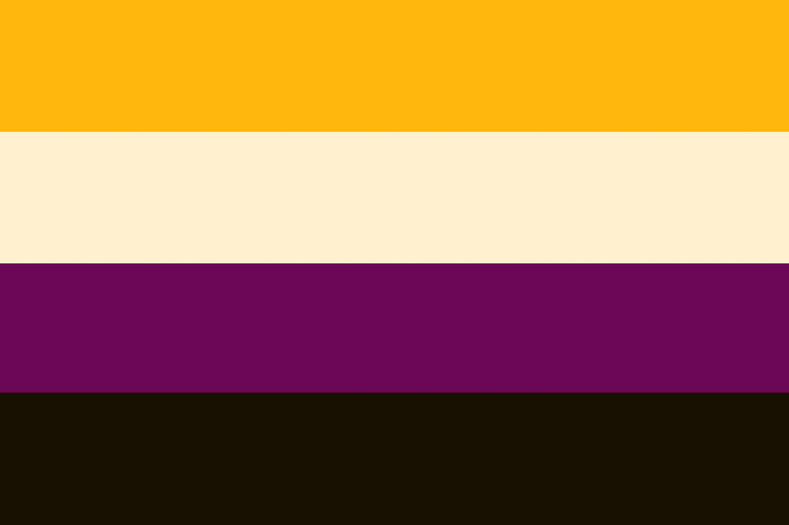

being non-binary

what's so frustrating about being non-binary is that people will assume you just want to be special. the term itself is a gender identity that is not strictly male or female. as a result, it does not fit within that gender binary.
in my case, it's a little different. i just want to feel more comfortable in my skin without being beholdend to any particular gender. i don't want to be a man, and i don't want to be a woman either, i just want to be me.
and to be me, means having a body, that some may view as 'androgynous' and others will consider 'feminine'. it means that i do NOT like being referred to as a he/him, but rather a they/them or by my preferred name. i don't want my identity to be reduced to what my genitals are nor have the expectation to fulfil a certain 'gender' role.
i just want to be comfortable in my skin, and happy with how my body looks in ways that are appealing to me.
so if i had to choose a label to identify under, it would be non-binary. but genderqueer is also fitting. and really, ideally, i am just seen as another person, an equal.
in my eyes, a world without gender is a world of equality. one where your genitals do not determine your social class, roles, expectations or opportunities.